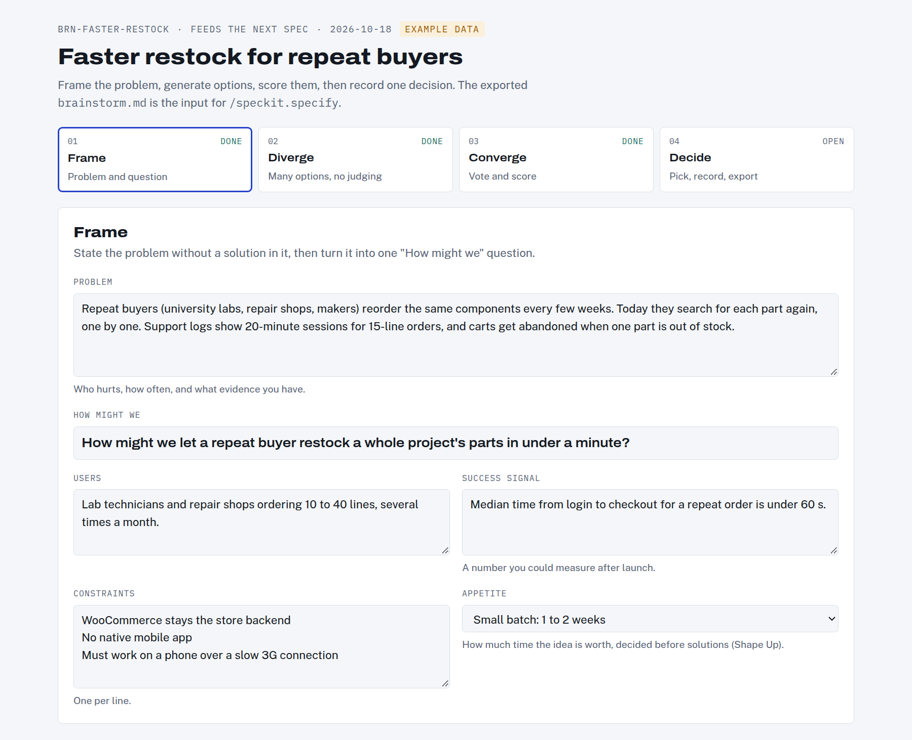
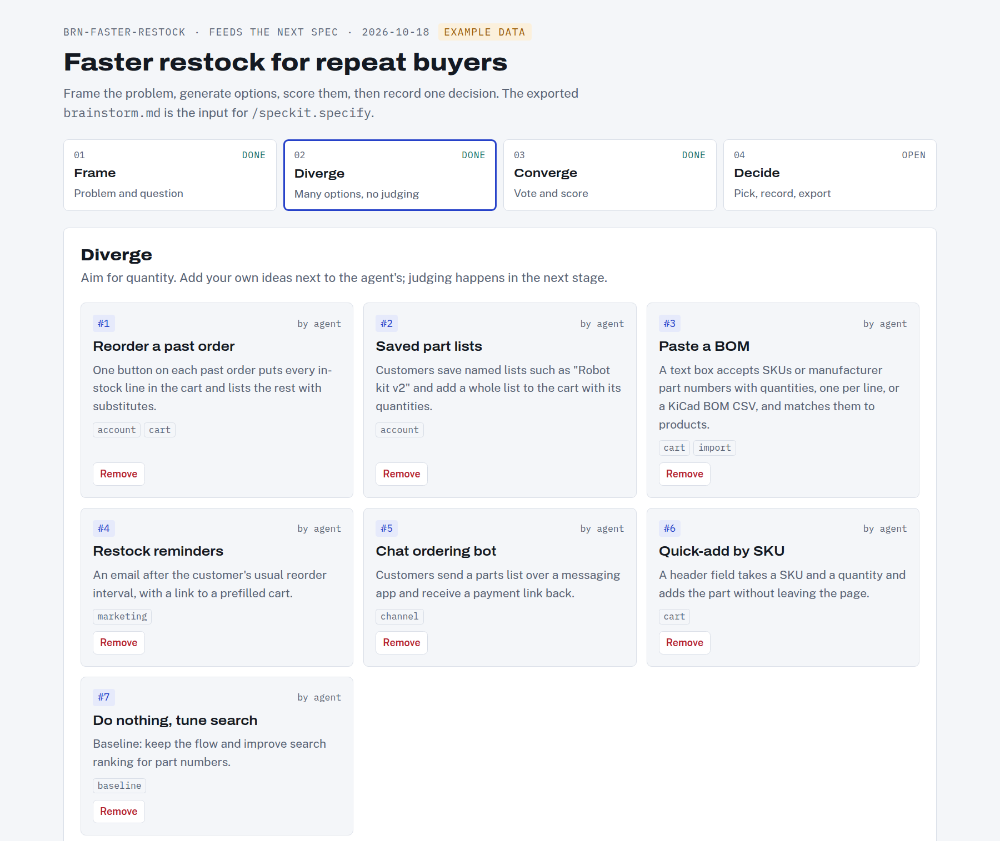
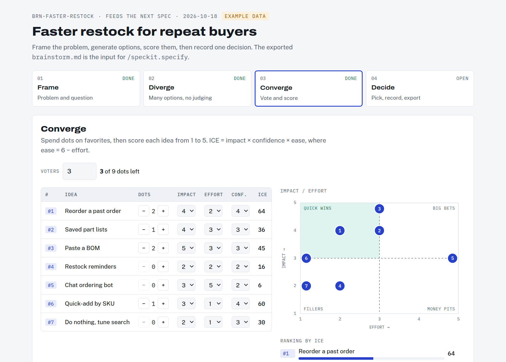
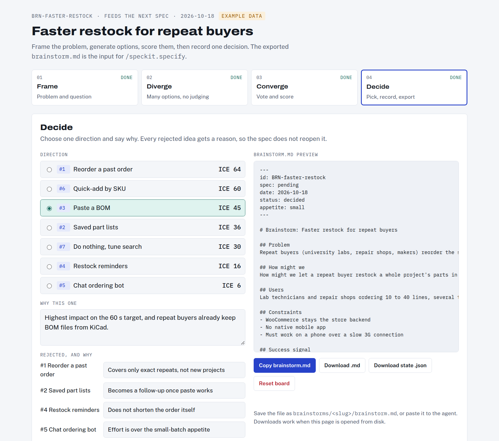

dev-standard
An engineering standard that your coding agent installs, follows, and can't quietly skip.
Every rule has an ID, an RFC 2119 level, the published standard it comes from, and the hook or CI check that enforces it. The rules are adopted from Google's engineering practices, GitHub Spec Kit, OWASP, IETF RFCs, NIST and Google SRE rather than invented.
/plugin marketplace add HDElectronics/dev-standard /plugin install dev-standard@dev-standard /dev-standard:install
Install dev-standard from https://github.com/HDElectronics/dev-standard by following its INSTALL.md.
Written rules, then checks that run anyway
An agent follows written instructions most of the time. dev-standard makes "most of the time" into "every time" with four layers, from soft to hard. A rule with no automated check is labeled advisory, so the list of MUST rules stays honest.
Instruct
AGENTS.md carries the MUST rules as one-liners. The full rules live in .dev-standard/standards/.
Guide
/brainstorm, Spec Kit commands, /pr and templates make the right shape the easy path.
Enforce
Claude Code hooks block the action or fix it as it happens. Git hooks catch the rest locally.
Verify
dev-standard check in CI, security scans, rulesets on main, and a reviewer agent.
Anatomy of a rule
Every rule follows the same shape, so people, agents and tools read it the same way. This one is taken straight from the standard:
Levels follow RFC 2119. A MUST rule blocks at its group's enforcement level; a SHOULD rule warns; a MAY rule is guidance. Each repo sets a level per group (block, warn, off) in .dev-standard.json, and records approved exceptions there as waivers with an expiry date.
From idea to merged code
Every feature passes through the same four stages. The red gates are decisions that only a person can make; hooks stop the agent from making them on its own.
Brainstorm
Find the right problem and direction.
- Frame, diverge, converge
- Decide gate
Specify
GitHub Spec Kit, used as is.
- Specify, Clarify gate
- Plan, Tasks, Analyze
Ship
One task per short-lived branch.
- Implement test first
- Verify gate, PR, review
Remember
Decisions outlive the chat.
- ADRs in
docs/adr/ - Accepted by a person gate
The brainstorm board
/brainstorm <slug> "problem" copies this board into brainstorms/<slug>/ and fills in only its data. You work it in a browser, then export brainstorm.md, which becomes the input for the spec. The screenshots show the board's built-in example.




Branches: trunk-based, one task per branch
The spec documents merge to main first. Each task then gets its own branch from the latest main, merged within three days. Unfinished features ship behind a flag that defaults to off, and releases are tags on main (BRA-001 to BRA-006).
main is protected by GitHub rulesets kept in the repo: pull request, a human approval of the latest push, required checks on an up-to-date branch, code-owner review of the files that define the rules, no force pushes, no bypass.
The decision log
Significant decisions (framework, database, auth, deploy target, major dependencies) are recorded as Architecture Decision Records in docs/adr/, in MADR format. The agent drafts them as proposed; only you set accepted. Accepted records are never rewritten: a new one supersedes them. Before proposing a design, the agent reads the accepted ADRs for that area and can't contradict one without proposing a replacement (ADR-008).
What happens when the agent cuts a corner
Six Claude Code hooks run on the agent's own actions. A blocked action returns the rule ID and the fix, so the agent can correct itself. The captures below are real output from the hooks, run against a demo repo.
| Hook | When | Rules | What it does | Result |
|---|---|---|---|---|
guard-approvals | Edit, Write | BRN-004 SDD-001 ADR-005 | Stops the agent from recording a brainstorm decision, approving a spec, or accepting an ADR. | blocks |
require-brainstorm | Edit, Write | BRN-001 | No spec until its brainstorm is decided. | blocks |
require-spec | Edit, Write | SDD-001 | No source edits on a feature branch until you approve the spec. Tests and docs stay open. | blocks |
no-bypass | Bash | AGT-002 GIT-005 BRA-011 SEC-005 | Blocks --no-verify, commits and force pushes on main, and --admin merges. Asks you before rm -rf, reset --hard, DROP or ruleset changes. | blocks or asks |
format-file | after Edit, Write | STY-001 | Formats each file the agent writes with ruff, Biome or clang-format. | fixes |
definition-of-done | Stop | AGT-003 | Runs the fast checks before the agent finishes. Blocks up to three times, then lets it stop and report the failure. | blocks |
CI checks the hooks can't see
dev-standard check is one dependency-free Python script. In CI it reads the pull request, the diff and .dev-standard.json, and reports each finding at its group's level, so warnings never fail the build and blocking findings always do.
| Check | Rules | Catches |
|---|---|---|
manifest | INS | Invalid .dev-standard.json, incomplete or expired waivers |
branch | BRA-003 | Branch names outside the convention |
spec | SDD-001 | Source changes on a spec branch before approval; missing status line |
brainstorm | BRN-001 | A new spec with no decided brainstorm |
trace | SDD-003 | Requirements of an implemented spec that no test references |
adr | ADR-002 ADR-004 ADR-007 | Bad file names, reused numbers, invalid status, index out of sync |
pr | PR-001 PR-003 | Non-conventional title; missing or empty description sections |
docs | DOC-007 | A feature that changes code but no docs |
deps | SEC-004 UI-002 AUTH-001 | Unexplained new dependencies, banned UI libraries without an ADR, low-level crypto |
An interview, not a script
The agent installs dev-standard by studying your repo and asking you about what it can't work out alone. Every question comes with a recommendation and the evidence behind it. Nothing changes until you approve the plan, and your existing code keeps its conventions: the standard applies to new and changed code.
| Round | Stage | Questions the agent may ask |
|---|
The agent skips any question your repo already answers. In Claude Code the questions arrive as multiple-choice prompts, four at a time; other agents ask them in chat. Here is one, word for word from install/interview.md:
| Mode | What the agent asks |
|---|---|
| Guided | Every question that applies to your repo. |
| Quick | Only conflicts that would change existing code, questions without a clear recommendation, the plan approval, and every action outside the repo. Everything else takes the recommendation and is logged as assumed. |
| Report only | Studies the repo and writes the adoption report. Nothing else changes. |
What lands in your repo
| Path | Purpose | How |
|---|---|---|
.dev-standard/ | This repository, pinned to a release | git submodule |
.dev-standard.json | Version, profiles, enforcement levels, waivers | new file |
AGENTS.md, CLAUDE.md | MUST rules, workflow, your repo's own conventions | marked block, merged |
.claude/ | Hooks, /brainstorm, /pr, reviewer agent | merged (skipped when you use the plugin) |
.specify/ | GitHub Spec Kit with dev-standard's template additions | specify init, then merged |
.github/ | PR template, CI job, rulesets, CODEOWNERS | merged |
docs/adr/ | Decision log, template and index | new, unless you already keep one |
docs/dev-standard/adoption-report.md | Every finding, question, answer and change | new file |
Every answer is logged in the adoption report, so an interrupted install picks up where it stopped. The whole install happens on a chore/adopt-dev-standard branch; to back out, delete that branch.
All {{N_RULES}} rules, by group
Generated from the files in standards/. Open a group to see its rules; each rule's full text, reason and check are in its source file.
Built on {{N_SOURCES}} published standards
Every source a rule group cites, most widely used first. The chips link to the groups that adopt it.
| Standard | Used by |
|---|
Defaults and layout
| Layer | Default | Change it with |
|---|---|---|
| Backend | FastAPI, Python 3.12+, uv, Pydantic v2, SQLAlchemy 2 and Alembic | python-api profile |
| Frontend | React and TypeScript on Vite (Next.js only for SEO), Tailwind, shadcn/ui, lucide-react, Recharts | an ADR (UI-002) |
| Auth | Keycloak over OIDC, with FastAPI holding an HttpOnly session for the browser | an ADR (AUTH-001) |
| Deploy | Containers (Dockerfile and compose); target chosen before the first deploy | an ADR (OPS-001) |
| Agents | Claude Code first; AGENTS.md for every other agent |
dev-standard/ ├── INSTALL.md the runbook the agent follows ├── install/interview.md the questions it asks, and what each answer changes ├── standards/ the rules, one file per group ├── templates/ files merged into your repo ├── profiles/ base, python-api, react-web config fragments ├── enforce/hooks/ the Claude Code hooks ├── cli/dev-standard the CI checks ├── .claude-plugin/ plugin and marketplace ├── tests/ tests for the hooks and the CLI └── docs/adr/ dev-standard's own decision log